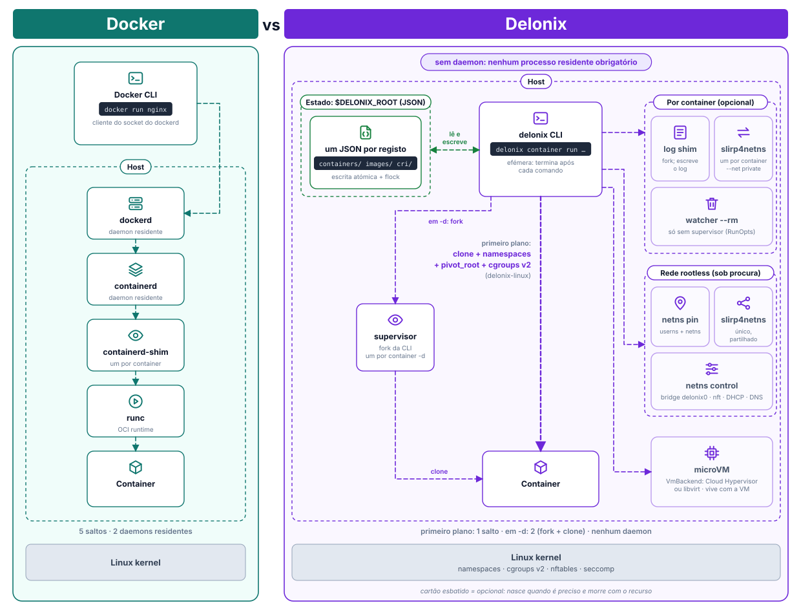
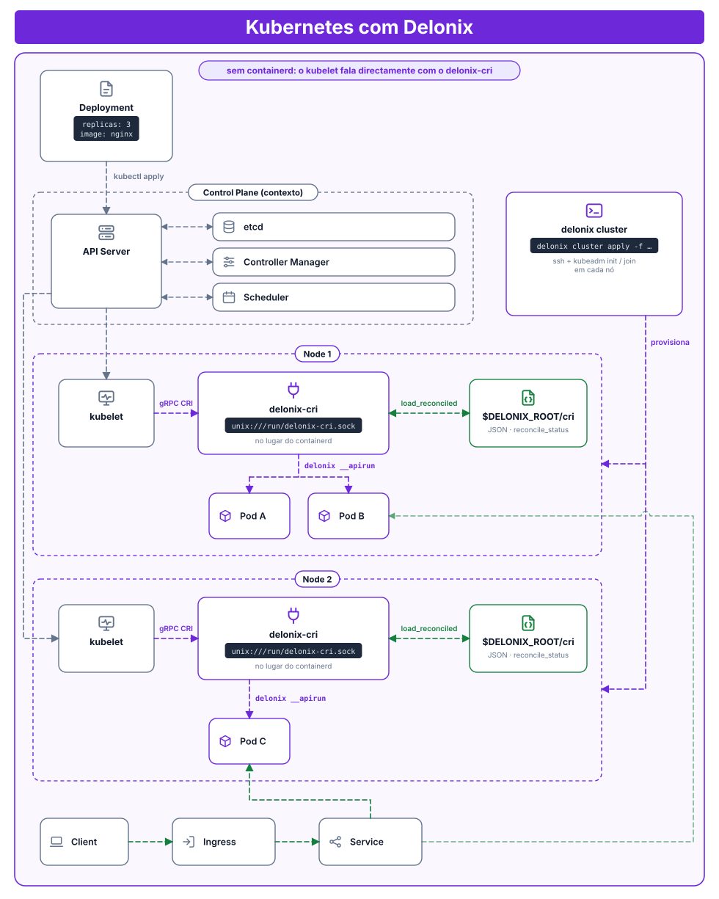

Architecture — Delonix Engine
C4 model (Context → Containers → Components) and functional system design of the
Delonix Engine: a daemonless, rootless-first, kernel-native container and
microVM engine, written in Rust (41 crates, crates/ workspace). This document is
canonical and kept in sync with the code — every structural claim carries a reference
to the crate/file where it was confirmed. Where limits exist, they appear in the
diagrams, not hidden away in footnotes.
Naming convention: delonix is the CLI binary (crate delonix-bin);
delonix-cri is the CRI server binary (crate delonix-cri); "holder" is the process
that holds the infrastructure network namespace of the rootless ingress
(crates/adapters/delonix-sdn/src/infra.rs).
C4 — Level 1: Context
The Delonix Engine is used by a human operator (via the CLI), by a kubelet (via CRI), and talks to external systems: OCI registries, remote SSH hosts and the local hypervisors.
graph TB
OP["Operador / utilizador<br>terminal"]
KUBELET["kubelet<br>nó Kubernetes"]
REG["Registos OCI<br>Docker Hub, ghcr.io, registos privados"]
SSHHOSTS["Hosts SSH remotos<br>cluster apply via ssh e scp"]
HV["Hipervisores locais<br>Cloud Hypervisor sobre KVM ou libvirt"]
UBU["cloud-images.ubuntu.com<br>imagens base p/ imagem VM dourada"]
DLX["Delonix Engine<br>motor de containers e microVMs<br>daemonless, rootless-first"]
OP -- "delonix container / image / build / vm / volumes / network / stack / cluster" --> DLX
KUBELET -- "CRI runtime.v1 gRPC<br>socket unix" --> DLX
DLX -- "pull e push de imagens<br>HTTP, verificação de digest" --> REG
DLX -- "kubeadm init e join idempotentes<br>sudo -n remoto" --> SSHHOSTS
DLX -- "arranque de microVMs<br>VmBackend" --> HV
DLX -- "download validado por SHA256SUMS" --> UBU
- CLI:
bins/delonix/src/main.rs(groupsContainer/Image/Build/Vm/Volumes/Network/Stack/Cluster, one module per group undersrc/cmd/). - CRI:
crates/interfaces/delonix-cri/src/bin/delonix-cri.rs→serve_blockingon a unix socket (DELONIX_CRI_ADDR, defaultunix:///run/delonix-cri.sock), the endpoint of the kubelet's--container-runtime-endpoint. - OCI registries:
crates/adapters/delonix-oci/src/registry.rs(pull_from_registry_with_creds,push_to_registry,push_oci_artifact/pull_oci_artifact— this pair with verification of the blob digest against the manifest). - SSH hosts:
bins/delonix/src/cmd/remote.rs(shell-out to the system'sssh/scp, remotesudo -n). - Hypervisors:
crates/adapters/delonix-vm/src/lib.rs(traitVmBackend, implementationsCloudHypervisorBackendandLibvirtBackend). - Public boundary: this repository knows nothing about tenant, licence, billing or console — any consumer of that kind is "external" (see ADR-7).
C4 — Level 2: Containers (executable units)
There is no daemon. No mandatory resident process exists: the CLI is ephemeral,
and the long-running processes that do exist are opt-in infrastructure (rootless
networking, log shim, --rm watcher, VMs) — each starts when it is needed and dies
with the resource it serves. Shared state is a directory of JSON files, not a daemon
socket.
graph TB
subgraph HOST["Host Linux"]
CLI["delonix — CLI efémera<br>clone, pivot_root, cgroups, nft<br>termina após cada comando"]
CRIBIN["delonix-cri — servidor gRPC<br>socket unix p/ o kubelet<br>o único processo-servidor, e é opcional"]
STATE["Estado em JSON — DELONIX_ROOT<br>containers, vms, volumes, images CAS,<br>networks, ingress, cri, clusters"]
subgraph INFRA["Infra rootless do ingress — só quando ha rede custom"]
HOLDER["holder netns<br>unshare --user --map-auto --map-root-user --net --mount<br>re-exec delonix netns holder<br>bridge delonix0 + nft + DHCP + DNS dentro do netns"]
SLIRP1["slirp4netns unico<br>tap0 host para infra, api-socket p/ hostfwd"]
end
subgraph PERCONT["Por container — quando aplicavel"]
CONT["processo do container<br>PID 1 proprio apos clone + exec"]
SLIRPN["slirp4netns por container<br>default (--net private) e com -p"]
SHIM["log shim<br>fork; escreve o log com rotacao<br>formato cru ou CRI"]
WATCH["watcher --rm<br>fork; espera o fim e limpa"]
end
VM["microVM<br>cloud-hypervisor ou qemu via libvirt"]
end
KUBELET2["kubelet"]
CLI -- "lê e escreve" --> STATE
CRIBIN -- "lê e escreve" --> STATE
KUBELET2 -- "gRPC runtime.v1" --> CRIBIN
CLI -- "arranca e configura" --> CONT
CLI -- "arranca sob procura" --> HOLDER
HOLDER --- SLIRP1
CLI -- "hook on_started" --> SLIRPN
CLI -- "fork" --> SHIM
CLI -- "fork" --> WATCH
CLI -- "VmBackend" --> VM
Confirmation in the code, piece by piece:
| Process | Where it is born | Lifetime |
|---|---|---|
delonix (CLI) |
bins/delonix/src/main.rs |
one command; in foreground it waitpids the container and exits |
delonix-cri |
crates/interfaces/delonix-cri/src/bin/delonix-cri.rs |
service (e.g. the systemd unit dist/delonix-cri.service inside the golden VM image) |
| holder netns | infra::start_holder (crates/adapters/delonix-sdn/src/infra.rs): unshare --user --map-auto --map-root-user --net --mount -- <self> netns holder; the re-exec is caught in main.rs before the clap parser |
lifetime of the ingress infrastructure, managed by a file-based ref-count (infra::acquire/release) |
| single slirp4netns | infra::start_slirp — connects tap0 to the holder's netns, with an api-socket for add_hostfwd |
follows the holder |
| per-container slirp4netns | delonix_sdn::slirp_attach (crates/adapters/delonix-sdn/src/lib.rs) — called as the on_started hook of the RunSpec |
lifetime of the container (dies with the netns); orphans cleaned up by reap_orphan_slirp |
| log shim | fork in the parent at spawn (crates/adapters/delonix-linux/src/lib.rs), runs log_shim — reads the pipe (or the pty master in console mode) and writes the log with rotation |
lifetime of the container; detaches from stdio with setsid + /dev/null |
--rm watcher |
spawn_rm_watcher (bins/delonix/src/cmd/container.rs) — only on run -d --rm |
until the container exits; performs the same cleanup as rm -f |
| microVM | delonix_vm::create — a cloud-hypervisor process (inside the infra netns, tap via infra::vm_attach) or a libvirt domain |
lifetime of the VM |
State lives in $DELONIX_ROOT (default /var/lib/delonix for root,
~/.local/share/delonix for rootless — infra::base_root and
ImageStore::default_root): Store/JsonStore
(crates/adapters/delonix-state/src/store.rs) persist Container/Vm as one JSON
file per record; the CRI keeps its own records under <root>/cri/
(crates/interfaces/delonix-cri/src/runtime_svc/lifecycle.rs).
A direct consequence of being daemonless: since there is no resident monitor, the
Running state of a JSON record can diverge from the kernel. The truth is reconciled
at read time — reconcile_status (crates/adapters/delonix-linux/src/lib.rs) uses
safe_to_signal (PID + starttime from /proc, to close the PID-reuse window) and
reclassifies Running→Crashed/Paused. The CRI calls it in load_reconciled
before replying to the kubelet.
C4 — Level 3: Components (the 41 crates)
Arrows = real dependencies, confirmed in the Cargo.toml files of crates/*/ and
in the use delonix_* of the src/. There are no cycles; delonix-model is the
common root.
graph TB
BIN["delonix-bin<br>CLI delonix — um modulo por grupo em src/cmd<br>manifesto e apply, cluster kubeadm, imagens VM douradas"]
CRI["delonix-cri<br>servidor CRI runtime.v1 — ImageService e RuntimeService<br>modulos: runtime_svc, lifecycle, streaming, spdy"]
RT["delonix-linux<br>motor de containers: clone e namespaces, setup_rootfs,<br>cgroups v2, seccomp, caps, exec, log shim, reconcile_status"]
NET["delonix-sdn<br>SDN rootless: modulo infra — holder netns, slirp unico,<br>publish e DNAT, DNS e DHCP; cni, wg WireGuard, discover"]
IMG["delonix-oci<br>imagens OCI: registry pull e push, cas, overlay,<br>build Dockerfile, buildpack CNB, sign, internal_registry"]
VM2["delonix-vm<br>raiz de composicao das VMs ate a P5:<br>semeia o registo e monta o VmEngine"]
VOL["delonix-volume<br>volumes nomeados e bind mounts, sintaxe -v Docker,<br>driver local ou nfs"]
NODECTX["delonix-node<br>contexto do no: eventos, verificacoes do host,<br>peer_cred, dispatch e as perguntas ao host e aos processos"]
STATECRATE["delonix-state<br>estado persistido: Store e JsonStore com flock,<br>escrita atomica, SecretStore e CredVault cifrados"]
MGMT["delonix-mgmt<br>API de gestao LOCAL (HTTP+JSON num socket unix, so o proprio uid)<br>expoe as metricas partilhadas em /metrics"]
TEL["delonix-telemetry<br>observabilidade: logging estruturado, spans OpenTelemetry/OTLP<br>e o registo Prometheus partilhado (saiu do core na P3)"]
SCAN["delonix-scanner<br>SBOM e varredura de CVE — image scan<br>e a imposicao de scan-on-pull"]
SEC["delonix-security<br>decisoes de seguranca do no: politica, admissao<br>unica (container E VM), evento, score, redaccao<br>(ADR-0026) — puro, sem sensores e sem inquilino"]
RULES["delonix-net-rules<br>regras de rede PURAS, ZERO dependencias — Cidr, nome de bridge,<br>IPAM dentro de um prefixo, leitura de taxas, o PolicyIr (ADR-0059 D6); partilhado com o PaaS"]
SPIFFE["delonix-spiffe<br>SPIFFE identity of the node as rustls material (ADR-0102, H0):<br>X.509-SVID chain, key and trust bundle (PEM) into a rustls ServerConfig/ClientConfig;<br>external authority (SPIRE) or the engine's own CA via self_signed.<br>NO consumer in the workspace yet — hence no inbound edge"]
CHV["delonix-provider-cloud-hypervisor<br>backend VmBackend Cloud Hypervisor (microVM por processo, api-socket)<br>(ADR-0044 P4b.4c) — saiu do delonix-vm, que o regista"]
LVIRT["delonix-provider-libvirt<br>backend VmBackend libvirt/KVM (QEMU via virsh)<br>(ADR-0044 P4b.4b) — saiu do delonix-vm, que o regista"]
PVE["delonix-provider-proxmox<br>backend VmBackend REMOTO contra a API de UM no Proxmox VE<br>(ADR-0008) — fora do delonix-vm por trazer cliente HTTP"]
NAS["delonix-provider-truenas<br>provisiona dataset, quota, permissoes e export numa NAS<br>pela API do TrueNAS (ADR-0009) — mesma razao de crate a parte"]
OPN["delonix-provider-opnsense<br>GatewayProvider REMOTO contra a API REST de UMA appliance OPNsense<br>(ADR-0051) — fora do delonix-sdn por trazer cliente HTTP"]
PDNS["delonix-provider-powerdns<br>cliente minimo da API de UM servidor PowerDNS, com a credencial<br>do PROPRIO motor (ADR-0064 D6) — remove os registos de gateway que o no deixa"]
MODEL["delonix-model<br>modelo partilhado PURO (foundation, ADR-0040) —<br>o Error e o dicionario DX-CDNN, Status, ContainerFw,<br>typestate, o modelo do segredo e os nomes gerados"]
STACK["delonix-stack<br>contexto Stack (ADR-0040): tabela de Kinds,<br>reconciliador de 3 vias, Condition, revisões"]
COMPUTE["delonix-compute<br>contexto Compute (ADR-0040): a especificacao<br>de execucao unica (RunOpts) que as entradas traduzem"]
NETCTX["delonix-networking<br>contexto Networking (ADR-0059 D7): as portas de rede por papel<br>(GatewayProvider, NetworkZoneProvider), os registos e as marcas de posse"]
STORCTX["delonix-storage<br>contexto Storage (ADR-0067): a porta de um driver de pool,<br>o registo de drivers, a allowlist do administrador e a marca de posse"]
MGMTBIN["delonix-mgmt-bin<br>o executavel delonix-mgmt, que `delonix serve api` executa (P3m)"]
MCPBIN["delonix-mcp-bin<br>o executavel delonix-mcp, que `delonix mcp` executa (P3l)"]
NODEAPI["delonix-node-api<br>o contrato de no delonix.node.v1 SERVIDO: gRPC e HTTP/JSON<br>dos mesmos .proto num socket unix, so o proprio uid;<br>hoje NodeService (info, health, capacity, providers) e openapi.json"]
NODEAPIBIN["delonix-node-api-bin<br>o executavel delonix-node-api, que `delonix serve node-api` executa"]
BTRFS["delonix-provider-btrfs<br>driver de pool btrfs (ADR-0067 P2): um volume e uma subvolume<br>feita pelo proprio processo do motor; a quota qgroup so como root"]
ZFS["delonix-provider-zfs<br>driver de pool zfs (ADR-0067 P3): um volume e um dataset<br>com refquota; ler e delegado, criar e destruir passa pelo helper"]
LVM["delonix-provider-lvm<br>driver de pool lvm-thin (ADR-0067 P4): um volume e um LV thin<br>com ext4, criado e montado pelo helper"]
CEPH["delonix-provider-ceph<br>suporte Ceph nativo (ADR-0081): quatro superficies de um cluster<br>pela porta Run do storage (RADOS status, RBD StoragePoolDriver de bloco,<br>CephFS por subvolume, RGW S3) — nunca a linkar librados"]
STORHELPER["delonix-storage-helper<br>o helper PRIVILEGIADO dos pools (ADR-0067 D3, P1): um processo<br>por ligacao no delonix-storage-helper.socket, SO_PEERCRED + allowUsers;<br>tambem o create-pool/destroy-pool do administrador"]
MCP["delonix-mcp<br>servidor MCP (ADR-0025) — superficie de IA LOCAL, sem inquilino<br>stdio-only; tools chamam Store/dominio, nunca shell arbitrario"]
ENGINE["delonix-engine<br>raiz de composicao unica (ADR-0040 D1/A5, camada assembly):<br>escolhe o adaptador e o provider de cada porta e expoe um Engine<br>com um servico por contexto — a interface recebe-o ja montado (A5)"]
HOST["delonix-host<br>adaptador do host (ADR-0040 R2): o mecanismo de processo-e-ficheiro<br>partilhado — escrita atomica, flock, contrato de dispatch e o peer cred<br>do socket local; adaptador de que os outros podem depender (A1)"]
POOLHELPER["delonix-pool-helper<br>o protocolo do helper PRIVILEGIADO de pools (ADR-0067 D3, ADR-0040 R2c):<br>as operacoes que precisam de root cruzam para o delonix-storage-helper"]
WARM["delonix-warm<br>o pool do plano morno (ADR-0095): runners pre-carregados (delonix __poolrunner)<br>que eliminam o pre_spawn do arranque a frio nos caminhos com processo vivo —<br>serve-one-then-exit, so orquestra processos e sockets"]
CRIBIN["delonix-cri-bin<br>o executavel delonix-cri, que `delonix serve cri` executa<br>(monta o Engine e serve o CRI runtime.v1)"]
BIN --> RT
BIN --> IMG
BIN --> VM2
BIN --> VOL
BIN --> NET
BIN --> CRI
BIN --> MGMT
BIN --> SCAN
BIN --> SEC
BIN --> PVE
BIN --> NAS
BIN --> OPN
BIN --> PDNS
MCPBIN --> MCP
MGMTBIN --> MGMT
NODEAPIBIN --> NODEAPI
BIN --> BTRFS
BIN --> ZFS
BIN --> LVM
BIN --> CEPH
CEPH --> STORCTX
BTRFS --> STORCTX
ZFS --> STORCTX
LVM --> STORCTX
STORHELPER --> STORCTX
STORHELPER --> VOL
STORHELPER --> BTRFS
STORHELPER --> ZFS
STORHELPER --> LVM
NODEAPIBIN --> NODECTX
NODEAPIBIN --> TEL
NODEAPI --> VM2
NODEAPI --> PVE
NODEAPI --> RT
NODEAPI --> NET
NODEAPI --> VOL
NODEAPI --> COMPUTE
NODEAPI --> NODECTX
NODEAPI --> MODEL
BIN --> MODEL
BIN --> STACK
BIN --> COMPUTE
BIN --> TEL
MGMT --> RT
MGMT --> IMG
MGMT --> VM2
MGMT --> VOL
MGMT --> NET
MGMT --> SCAN
MGMT --> TEL
SCAN --> IMG
CRI --> RT
CRI --> IMG
CRI --> NET
CRI --> TEL
VM2 --> COMPUTE
NET --> RULES
PVE --> NETCTX
VM2 --> LVIRT
VM2 --> CHV
CHV --> COMPUTE
CHV --> MODEL
CHV --> NODECTX
LVIRT --> COMPUTE
LVIRT --> MODEL
LVIRT --> NODECTX
OPN --> NETCTX
NET --> NETCTX
NETCTX --> MODEL
NETCTX --> COMPUTE
NETCTX --> RULES
BIN --> NETCTX
STATECRATE --> MODEL
COMPUTE --> NODECTX
COMPUTE --> MODEL
CRI --> NODECTX
CRI --> COMPUTE
CRI --> MODEL
RT --> NODECTX
RT --> COMPUTE
RT --> MODEL
MCP --> NODECTX
MCP --> COMPUTE
MCP --> MODEL
MCPBIN --> NODECTX
MGMT --> NODECTX
MGMT --> COMPUTE
MGMT --> MODEL
MGMTBIN --> NODECTX
NODECTX --> MODEL
IMG --> NODECTX
IMG --> COMPUTE
IMG --> MODEL
PVE --> COMPUTE
PVE --> MODEL
BIN --> NODECTX
SCAN --> MODEL
NET --> NODECTX
NET --> COMPUTE
NET --> MODEL
SEC --> NODECTX
SEC --> MODEL
STACK --> MODEL
STATECRATE --> NODECTX
STATECRATE --> COMPUTE
NAS --> MODEL
OPN --> MODEL
PDNS --> MODEL
VM2 --> NODECTX
VM2 --> MODEL
VOL --> STORCTX
STORCTX --> MODEL
VOL --> NODECTX
VOL --> COMPUTE
VOL --> MODEL
RT --> STATECRATE
NET --> STATECRATE
IMG --> STATECRATE
VOL --> STATECRATE
VM2 --> STATECRATE
BIN --> STATECRATE
CRI --> STATECRATE
MGMT --> STATECRATE
MCP --> STATECRATE
MCP --> VM2
MCP --> VOL
MCP --> NET
MCP --> MGMT
ENGINE --> COMPUTE
ENGINE --> VM2
ENGINE --> STATECRATE
ENGINE --> VOL
ENGINE --> NET
ENGINE --> RT
ENGINE --> IMG
ENGINE --> SCAN
ENGINE --> MCP
ENGINE --> MGMT
ENGINE --> TEL
ENGINE --> MODEL
HOST --> MODEL
POOLHELPER --> STORCTX
POOLHELPER --> MODEL
CRIBIN --> CRI
CRIBIN --> ENGINE
CRIBIN --> HOST
CRIBIN --> TEL
Notes for reading the graph (all verified):
delonix-binDEPENDS ondelonix-cri— an earlier version of this document claimed the opposite («they are two independent binaries»), and that stopped being true whendelonix serve cribegan serving the CRI from the CLI itself. Confirmed inbins/delonix/Cargo.toml:21. Thedelonix-cristill has its own[[bin]], and it is the reasonhyper/tonic/tokio-rustlsare already in the-bin's tree at no new supply-chain cost (see the L7 proxy section inAGENTS.md). The CRI, in turn, does not depend ondelonix-vmnor ondelonix-volume(onlyruntime/image/net/core—crates/interfaces/delonix-cri/Cargo.toml).delonix-mgmtis the crate with the most internal dependencies (seven:runtime,image,vm,volume,net,scan,core) and that is what its role demands — it answers for the whole engine to a local control-plane. Nothing depends on it except the-bin, and it is local by design: unix socket,SO_PEERCRED, only its own uid (ADR-0010).delonix-linuxdepends only oncore— the container engine knows nothing about networking: the integration happens through inversion of control, with theon_startedhook of theRunSpec(the CLI passes closures that calldelonix-sdn).delonix-vmno longer depends ondelonix-sdn(P3i): the Cloud Hypervisor backend attaches the VM'stapto the ingress bridge through theVmNetworkport ofdelonix-compute, whichdelonix-sdnimplements (vm_network::HostVmNetwork) and the binary registers.delonix-telemetry(P3j) holds the structured logging, the OTLP spans and the shared Prometheus registry, which came out ofdelonix-runtime-core: the foundation no longer carries an exporter that every crate compiled just because it needed aContainer.delonix-net-ruleshas NOT A SINGLE dependency — neither internal nor external, and that is what makes it crossable: it is whatdelonix-sdnand thedelonix-paascontrol-plane both compile to produce the SAME bridge name, the same IP within a prefix, the same reading of10mbit. Putting that behind an HTTP endpoint would pay a network hop — and a new failure mode — to compute what both sides already know how to compute; and two implementations that MUST agree are two that one day will not.delonix-sdnre-exports everything, so no consumer changed.delonix-provider-proxmox,delonix-provider-truenasanddelonix-provider-opnsenseare outside the engine crates on purpose, and for the same reason written in all threeCargo.tomlfiles: they bring an HTTP client (reqwest), and an engine crate does not grow one.delonix-vmhas four dependencies,delonix-volumethree anddelonix-sdnfive — putting the client to talk to ONE remote target in there would swap that for a tree that the whole engine then has to drag along. That is why the Proxmox backend (ADR-0008) implementsVmBackendand the OPNsenseGatewayProvider(ADR-0051) implements the port of thedelonix-networkingcontext (ADR-0059 F2a; until then it lived indelonix-sdn), both from the outside, and they register themselves (register_backend/register_gateway_provider), with the target known only to the-bin, not to the engine.delonix-provider-powerdnsis outside for the same reason (ADR-0064 D6): it talks to ONE PowerDNS server, with the credential that the operator gives to the ENGINE inproviders.yaml, to remove the gateway records that the Proxmox node writes and never removes. It depends only ondelonix-model; what knows WHICH records they are is thedelonix-networkingcontext (gateway_records) and the provider (DnsProvider::reverse_zone), and what wires them is the-bin.- Nothing depends on
delonix-provider-proxmox,delonix-provider-truenasnordelonix-provider-opnsenseexcept the-binand, in the case ofdelonix-provider-proxmox,delonix-node-api(which lists it among the node's providers, asdelonix provider lsdoes) — they are leaves of the graph, and that is what allows a misconfigured remote target to warn and carry on instead of stopping acontainer ls. delonix-mcpsits outside the eight dependency-clean engine crates, for the SAME reason asdelonix-mgmt(ADR-0025): it brings the official MCP SDK (rmcp) and its owntokioruntime, and no engine crate depends on it. It depends ondelonix-mgmtto reuse the existingdashstats::collect(runtime.info/metrics.querydo not derive the same numbers a second time) — it is the only new crate that depends on another crate "outside the engine" instead of only on the eight. Stdio-only at this stage: a child process per AI client session, never a daemon nor a loopback socket — the remote/multi-tenant variant of the original design was rejected by ADR-0010 and belongs todelonix-paas, not here.- Internal modules that matter to the design:
delonix-sdn::infra— the whole rootless plane (holder, single slirp, publish/DNAT, DNS/DHCP/RA, per-container firewall, egress policy,attach_container);delonix-sdn::wg— WireGuard between nodes (encrypts the overlay; the holder creates the interface in the infra netns);delonix-sdn::cni— compatibility with real CNI plugins (opt-inDELONIX_CNI=1,cni::enabled_conf);delonix-oci::overlay—mount_rootfs(overlayfs) andexport_rootfs(flattening, the rootless path);delonix-oci::registry— registry HTTP client, with digest verification;delonix-oci::buildpack— Cloud Native Buildpacks (CnbPlan);delonix-state::{secret,cred_vault}— the runtime's Secret Manager (--secret/--secret-files; the decrypted values only ever touch a tmpfs inside the container's namespace —write_secret_filesincrates/adapters/delonix-linux/src/lib.rs);delonix-bin::cmd::{cluster,k8s_recipes,vmimage,remote}— the kubeadm cluster plane (flow d, below).
Diagrams — Docker vs Delonix, and Kubernetes with Delonix
Two drawings that answer, at a glance, why the engine is daemonless and rootless-first, in the style of the classic "Docker vs Kubernetes" comparison: solid title bar per panel, dashed boxes for logical boundaries, dashed arrows (panel colour = control flow, green = data or client traffic), the kernel as a grey band at the bottom. The labels inside the drawings are in Portuguese (pt-AO), like the operator docs.
- Source of the drawings:
docs/diagrams/gen_diagrams.py— one call per box, group and arrow, with explicit coordinates. Edit it and runpython3 docs/diagrams/gen_diagrams.py; commit the regenerated.svg. - Each drawing has a text twin in Mermaid, next to it.
- Every box and every arrow is in the confirmation table below; what could not be
confirmed in the code is not drawn. Line numbers are as of commit
6ae1321d.
A — Docker vs Delonix

Text twin: docs/diagrams/delonix-vs-docker.mermaid.
How to read it:
- Hops between the CLI and the container. Docker: five (
dockerd,containerd,containerd-shim,runc), two of them resident daemons; the Docker CLI is drawn outside the host because it is a client of thedockerdsocket. Delonix, in the foreground: one — the CLI itself doesclone+ namespaces +pivot_root+ cgroups v2 throughdelonix-linux. Detached (-d): two, drawn as a path of their own — the CLI forks a supervisor (a copy of itself) and the supervisor does the same clone, staying as the container's parent to collect its real exit status. The supervisor is the counterpart of Docker'scontainerd-shim: one per container, gone with it, not a shared daemon. Either way the Delonix CLI runs on the host, inside theHostbox. - Everything else is optional and on demand (faded cards). The per-container
helpers (log shim, per-container
slirp4netns, the--rmwatcher) are forked when a container needs them; the rootless network plane (netns pin,netns control, ONE sharedslirp4netns) is brought up byensure_upand ref-counted; a microVM is another kind of workload, one process (or libvirt domain) per VM, started through aVmBackend. State is a directory of JSON files, not a daemon socket.
B — Kubernetes with Delonix

Text twin: docs/diagrams/delonix-kubernetes.mermaid.
How to read it:
- Grey is Kubernetes (Deployment, Control Plane, kubelet, Ingress, Service): context, not code of this repository. Purple and green are Delonix.
- On each node the kubelet speaks
runtime.v1todelonix-crionunix:///run/delonix-cri.sock— there is no containerd. The CRI server is multi-threaded, so every start goes to a fresh, single-threadeddelonix __apirunprocess, which does the clone. Before answering the kubelet, the CRI reconciles the record against the kernel (load_reconciled→reconcile_status). delonix clusterbootstraps the nodes over ssh + kubeadm (init/join), withcriSocketpointing atdelonix-cri.- The drawing has exactly one arrow-on-arrow crossing (drawn as a hop; arrows do cross
group borders, which is allowed): three sources — API Server,
delonix cluster, the client — each reach both nodes, and with two nodes stacked one crossing cannot be avoided without crossing a card. That client arrow (Service → Pod B) is the longest line, so it is drawn thinner and lighter.
C — Crate layers
Text only: docs/diagrams/delonix-crate-layers.mermaid.
It counts the real normal dependencies between the layers (dev-dependencies excluded).
The direction is bins → assembly/interfaces → adapters → contexts →
foundation, with providers beside the adapters: the contexts (which own the ports)
sit below the adapters (which implement them). There is no cycle between crates; at
layer level adapters and providers point at each other through different crates
(delonix-vm → the Cloud Hypervisor and libvirt providers it registers;
delonix-provider-libvirt → delonix-host). The interfaces no longer reach the
engine adapters directly: only delonix-host, delonix-telemetry and
delonix-pool-helper. To recount:
cargo metadata --no-deps --format-version 1 --offline | python3 -c '
import json, os, sys, collections
m = json.load(sys.stdin); root = m["workspace_root"]; pk = {p["name"]: p for p in m["packages"]}
def layer(p):
r = os.path.relpath(os.path.dirname(p["manifest_path"]), root).split("/")
return r[1] if r[0] == "crates" else r[0]
c = collections.Counter((layer(p), layer(pk[d["name"]])) for p in pk.values()
for d in p["dependencies"] if d["name"] in pk and d.get("kind") is None)
for (a, b), n in sorted(c.items()): print(f"{a} -> {b}: {n}")'
Confirmation table — element → where it was confirmed
Names below are the English equivalents of the labels in the drawings.
| Diagram | Element | Confirmed in |
|---|---|---|
| A | Docker panel: CLI (client of the socket), host, dockerd, containerd, containerd-shim, runc, container, kernel band, and their arrows | External — the reference image plus Docker's public architecture (the shim added so the comparison does not flatter Delonix); not code of this repository |
| A | Banner "no daemon: no mandatory resident process" | Level 2 above and ADR-1; the only long-running units shipped are opt-in: dist/ (delonix-cri.service, socket-activated delonix-node-api and delonix-storage-helper) |
| A | Host box around the Delonix side (the CLI runs on the host) | the CLI clones locally: clone at delonix-linux/src/lib.rs:9759, called in-process from cmd_run |
| A | delonix CLI, ephemeral (container run) |
bins/delonix/src/main.rs:2228; cmd_run in bins/delonix/src/cmd/container.rs:3622 |
| A | Arrow CLI → container (foreground) | launch::start at container.rs:4374 → delonix-compute/src/domain/launch.rs:193 → HostWorkload::create in delonix-linux/src/workload.rs:52 |
| A | Arrows CLI → supervisor ("fork") → container ("clone"), for -d |
should_supervise (detach) launch.rs:165; fork supervise.rs:103; create_with inside the fork supervise.rs:132 |
| A | Arrow CLI → per-container group | log shim forked by the in-process spawn delonix-linux/src/lib.rs:8966; slirp hook container.rs:3563; watcher container.rs:4802 |
| A | Arrow CLI → microVM | delonix_vm::create from the CLI bins/delonix/src/cmd/vm.rs:3468 |
| A | clone + namespaces | clone_flags (NEWNS/UTS/PID/IPC/NET/USER) in delonix-linux/src/lib.rs:9558; clone at lib.rs:9759 |
| A | pivot_root | delonix-linux/src/lib.rs:2908 (runs inside the clone) |
| A | cgroups v2 | setup_cgroup in delonix-linux/src/lib.rs:7877 (unified files: memory.max, cgroup.subtree_control) |
| A | State group, $DELONIX_ROOT (JSON), read and written by the CLI |
Store delonix-state/src/store.rs:298, JsonStore<T> :681, default_root :314, flock :23; images/ in delonix-oci/src/image.rs:152; cri/ in lifecycle.rs:663 |
| A | Supervisor (-d, one per detached container) |
run_supervised delonix-linux/src/supervise.rs:81; module doc supervise.rs:1 |
| A | Log shim | log_shim delonix-linux/src/lib.rs:1445, started at :8966 |
| A | --rm watcher (only with --no-supervisor) |
spawn_rm_watcher container.rs:4802, reached only on the unsupervised detached path container.rs:4388 |
| A | Per-container slirp4netns |
slirp_attach delonix-sdn/src/lib.rs:2180, hooked at container.rs:3563 |
| A | Rootless network group: netns pin, netns control, single slirp4netns |
PidKind delonix-sdn/src/infra.rs:451; re-exec main.rs:2259, :2269; start_slirp infra.rs:2588; pin creates its own namespaces: pin_userns.rs |
| A | Arrow CLI → rootless network ("on demand", ref-counted) | ensure_up infra.rs:1929; acquire/release :1779, :1790 |
| A | Bridge delonix0, nft, DHCP, DNS |
infra.rs:28, :1336, start_dhcp :3634, dns_server_main :9817 |
| A | microVM through VmBackend (Cloud Hypervisor or libvirt) |
trait delonix-compute/src/domain/vm_backend.rs:558; delonix-provider-cloud-hypervisor/src/lib.rs:861; delonix-provider-libvirt/src/lib.rs:3260; registered by delonix-vm/src/lib.rs:220 |
| A | Kernel band: namespaces, cgroups v2, nftables, seccomp | rows above; apply_seccomp delonix-linux/src/lib.rs:429 |
| B | Deployment, Control Plane (API Server, etcd, Controller Manager, Scheduler), kubelet, Client, Ingress, Service | Kubernetes — context, drawn grey; not code of this repository |
| B | Kubernetes arrows: kubectl apply, API Server ↔ etcd / Controller Manager / Scheduler, API Server → kubelet, Client → Ingress → Service → pods |
Kubernetes — context; the pods they reach are the ones delonix-cri starts (rows below) |
| B | Banner "no containerd: the kubelet talks to delonix-cri directly" | the kubelet endpoint is delonix-cri's socket (row below) and ADR-6 |
| B | kubelet → delonix-cri, gRPC runtime.v1 |
delonix-cri/src/lib.rs:3, :20; serve_blocking :603 |
| B | unix:///run/delonix-cri.sock, no containerd |
bins/delonix-cri-bin/src/main.rs:363; dist/delonix-cri.service; criSocket kubeadm_config.rs:213 |
| B | delonix-cri → delonix __apirun → pods |
delonix_bin lifecycle.rs:807 (→ delonix-host/src/dispatch.rs:33); __apirun lifecycle.rs:2362; caught in main.rs:2421 |
| B | $DELONIX_ROOT/cri, load_reconciled / reconcile_status |
lifecycle.rs:963 → RuntimeOps::reconcile_status in delonix-cri-bin → delonix-linux/src/lib.rs:13353 |
| B | delonix cluster → nodes, ssh + kubeadm init/join |
apply_one cluster.rs:2443; kubeadm_init :4683; kubeadm_join :4840; ssh remote.rs:123 |
| C | Every layer edge and its count | cargo metadata --no-deps (snippet above) |
Not drawn on purpose (they exist, but are opt-in and would hide the message): the warm
plane of pre-loaded runners (delonix-warm, ADR-0095, used by the CRI on the rootless
isolated path); the local servers delonix-mgmt, delonix-mcp, delonix-node-api
and the socket-activated units in dist/; the Proxmox remote VmBackend; the Docker
API compatibility path (cmd/dockerapi.rs).
Divergences found while drawing (the code wins)
Confirmed against the code at 6ae1321d; the sections above them were not rewritten
in this change.
- Level 3 graph. 24 of its edges no longer exist in the
Cargo.tomlfiles and 50 real ones are missing. Notably:delonix-binno longer depends ondelonix-cri(delonix serve criexecs thedelonix-cribinary —serve.rs:152);delonix-crino longer depends ondelonix-linux/-oci/-sdn/-state(its ports are filled bydelonix-cri-bin, R3h);delonix-enginedoes not depend ondelonix-mcpnordelonix-mgmt;delonix-mgmtdepends only ondelonix-host,delonix-telemetry, the contexts and the foundation. The note "delonix-binDEPENDS ondelonix-cri" is stale. - Level 2 and ADR-3: the holder was split. Since v0.42.0 the rootless ingress is
netns pin(creates and holds the user + network namespaces,pin_userns.rs),netns control(the control socket: bridge, nft, DHCP, DNS) and the singleslirp4netns(infra.rs:451). It is no longer started throughunshare(1). - Level 2, limitations 4 and 6, ADR-1: there is a detached supervisor.
run -dstarts under a supervisor forked from the CLI, which is the container's parent: it collects the real exit status and applies--restart(supervise.rs:1,launch.rs:193). The--rmwatcher remains only for--no-supervisor. Limitation 4 ("restart_policyis not consumed") and limitation 6 ("the real exit code is lost in detach") read as stale for this path. - Limitation 7 and flow (c). The CRI now calls the grouped forms
(
container rm,container stop,net netns attach) and starts containers with__apirun <spec.json>(lifecycle.rs:2362); the root path no longer runspod create— it uses CNI (lifecycle.rs:1226). The doc comment ofdelonix()atlifecycle.rs:812still says "top-levelrun/stop/rmforms".
System design — main flows
(a) rootless container run — default --net private
By default (rootless, --net private) the container gets a netns of its own served
by a dedicated slirp4netns outbound uplink, instead of sharing the host's network —
the Podman-rootless model. -p adds host port-forwards on top of the same slirp;
--net host opts back into sharing the host netns (the former default). This is the
behaviour of docker run / podman run (cmd_run in
bins/delonix/src/cmd/container.rs; spawn in
crates/adapters/delonix-linux/src/lib.rs; slirp_attach in crates/adapters/delonix-sdn/src/lib.rs).
sequenceDiagram
participant U as operador
participant CLI as delonix run
participant K as kernel
participant INIT as container_init filho
participant S as slirp4netns dedicado
U->>CLI: delonix container run -p 8080:80 imagem
CLI->>CLI: parse_publish valida os -p antes de criar seja o que for
CLI->>CLI: resolve_or_pull + prepare_rootfs overlay ou export achatado
CLI->>K: clone com NEWNS NEWUTS NEWPID NEWIPC NEWNET NEWUSER
K-->>CLI: pid do filho
Note over CLI,INIT: filho bloqueia num pipe a espera do GO do userns
CLI->>K: write_userns_maps — newuidmap e newgidmap com gama subuid se ha helpers
CLI->>INIT: byte GO pelo pipe de sincronizacao
INIT->>INIT: setup_rootfs — mount privado, bind do rootfs, volumes, pivot_root, proc, sys RO
INIT->>INIT: caps, seccomp, no_new_privs, sysctls, ulimits, secrets em tmpfs
CLI->>CLI: setup_cgroup + store.save Running
CLI->>S: hook on_started — slirp_attach ao pid
S-->>CLI: byte ready pelo ready-fd
CLI->>S: add_hostfwd 8080 para 80 via api-socket
INIT->>INIT: execve do comando da imagem
alt foreground
CLI->>K: waitpid — Status final com exit code
else detach
CLI-->>U: imprime o id e termina — sem monitor residente
end
Structural points: the userns-GO → console/log order is critical and documented in
spawn (deadlock otherwise); the log shim in detach mode does setsid and drops stdio
so that run -d does not hang whoever captures its stdout; the slirp dies with the
container's netns and there is an orphan reaper (reap_orphan_slirp) because, without a
daemon, a container crash has no one to clean up on the spot.
(b) run --net <network> -p — publishing through the shared ingress
With a custom network there is no per-container slirp: the container joins a netns
created by the holder and the port is published with one add_hostfwd on the single
slirp + one DNAT in the nft table inside the infra netns (infra::attach_container,
infra::publish_port, do_publish — crates/adapters/delonix-sdn/src/infra.rs).
sequenceDiagram
participant CLI as delonix run --net web -p 8080:80
participant H as holder netns
participant SL as slirp4netns unico
participant C as container
CLI->>H: ensure_up — arranca holder e slirp se nao existirem, refcount
CLI->>H: attach_container pelo control socket SO_PEERCRED
H->>H: ip netns add + veth para a bridge da rede + IP deterministico + anti-spoofing
H-->>CLI: nome da netns e IP do container
CLI->>SL: publish_port — add_hostfwd 8080 para tap0 8080 via api-socket
CLI->>H: publish 8080 para IP 80 — DNAT nft na chain pre do netns de infra
Note over CLI,H: regras criadas ANTES do arranque — o IP ja e conhecido
CLI->>C: clone com join_netns = /run/netns/nome — setns em vez de NEWNET
Note over C: LIMITACAO rootless: o setns a netns do holder falha p/ um run normal — ver Limitacoes
Note over H,SL: publish e unpublish sao estado do dataplane, nao do processo:<br>reconfiguracao a quente sem parar o container
CLI->>SL: stop ou rm — unpublish_port remove hostfwd
CLI->>H: unpublish — remove o DNAT; detach_container desfaz o veth
What makes the hot reconfig possible: the publishing lives in the slirp (hostfwd) and
in the holder's nft — neither of the two belongs to the container's process.
unpublish_ports runs on stop/rm (cmd/container.rs), and reap_orphan_hostfwds
reconciles the slirp against the live containers when something died without cleaning
up. The same dataplane supports per-container firewall (fw_chain_body, dispatched in
O(1) by the verdict map fwmap in the fwcont chain), egress policy and rate-limit
(do_netrate).
Restricting a published port by source CIDR works (net ingress allow <c>
<port> --from <cidr>): the client address survives the hostfwd for any routable source.
The exception is the client on the host's own loopback, which arrives as the slirp
gateway (delonix_sdn::SLIRP_GW) because libslirp has no route back to 127.0.0.1 —
testing such a rule with curl localhost fails for that reason, not because of the
rule.
(c) CRI Pod — sandbox and join_netns
The CRI (crates/interfaces/delonix-cri/src/runtime_svc/lifecycle.rs) keeps the CRI
state in its own JSON and delegates to the delonix binary the operations that use
clone — the server is multi-threaded (tokio) and clone is only safe
single-threaded (decision documented in the header of lifecycle.rs).
sequenceDiagram
participant KL as kubelet
participant CRI as delonix-cri
participant D as binario delonix
participant H as holder netns
KL->>CRI: RunPodSandbox
alt host network — namespace_options NODE
CRI->>CRI: sem netns proprio — regista host_network true
else rootless com CNI opt-in DELONIX_CNI=1
CRI->>H: cni_attach_container — plugins CNI correm no holder, IP do IPAM
else rootless SDN nativo
CRI->>D: netns attach cri-id — netns partilhada do ingress
else root
CRI->>D: pod create pod-cri-id --network — infra container estilo pause
end
CRI-->>KL: pod_sandbox_id
KL->>CRI: CreateContainer + StartContainer
CRI->>D: run detached com --pod — RunSpec.join_netns p/ a netns do sandbox
Note over D: log em formato CRI — RunSpec.log_cri: rfc3339nano stdout F linha
KL->>CRI: ContainerStatus
CRI->>CRI: load_reconciled — reconcile_status contra o kernel antes de responder
Note over CRI: crash detectado vira Crashed 137 — o kubelet com OnFailure reage
KL->>CRI: StopPodSandbox e RemovePodSandbox
CRI->>D: stop e rm -f de cada container, depois desfaz o netns ou o infra container
The CRI-format logs are written by the same log shim as flow (a) —
RunSpec.log_cri (crates/adapters/delonix-linux/src/lib.rs) — so that kubectl logs/
crictl logs read the file directly. kubectl's exec/attach/port-forward go
through streaming.rs/spdy.rs (a dedicated streaming server, SPDY).
(d) cluster kubeadm — from the golden image to the cluster
Two layers on the same foundation (bins/delonix/src/cmd/cluster.rs):
cluster apply -f cloud.yaml does the kubeadm bootstrap on hosts that are already
alive; cluster kubeadm --name N --control-plane 1 --workers M first provisions the
VMs (golden image) and then calls the same apply_one (provision_and_apply —
zero duplication of the kubeadm/SSH/validation logic).
sequenceDiagram
participant U as operador
participant CL as delonix cluster kubeadm
participant VS as VmImageStore
participant VM as delonix vm create
participant R as hosts remotos via ssh
U->>CL: cluster kubeadm --name demo --control-plane 1 --workers 2
CL->>VS: resolve_vm_image — a explicita, ou a UNICA existente; erro claro com 0 ou N
Note over VS: imagem dourada = Ubuntu cloud image validada por SHA256SUMS +<br>virt-customize com k8s_customization_steps: kubeadm kubelet kubectl,<br>swap off, modulos e sysctls, delonix-cri + unit systemd — cmd/vmimage.rs
CL->>CL: gera ou carrega chave SSH ed25519 em root/clusters/nome
loop cada VM cp1..N w1..M
CL->>VM: delonix_vm create — disco = imagem dourada + seed ISO cloud-init por instancia
CL->>R: wait_for_vm_ssh_ready — IP via vm status, depois ssh_check real, timeout
end
CL->>CL: constroi ClusterSpec em memoria + validate — whitelists valid_endpoint valid_cidr valid_version
Note over CL: validate corre ANTES de qualquer interpolacao em comando remoto — anti RCE por manifesto
loop cada host — sequencial
CL->>R: prepare_host — k8s_recipes: cada passo tem check e apply, idempotente sem ficheiro de estado
end
CL->>R: kubeadm_init no 1.o control-plane — salta se admin.conf ja existe
R-->>CL: JoinInfo — token e hashes
loop restantes control-planes e workers
CL->>R: kubeadm_join — salta se kubelet.conf ja existe
end
CL->>R: traz o kubeconfig p/ root/clusters/nome-kubeconfig.yaml — copia p/ ~/.kube/config se nao existir
Note over CL: LIMITACAO: cluster kubeadm recusa mais de 1 control-plane —<br>HA exige endpoint estavel LB ou VIP, que este comando ainda nao provisiona
k8s_recipes.rs is deliberately the shared catalogue between the golden image
build (vmimage::build, offline via virt-customize) and the live preparation over
SSH (cluster apply) — a host prepared by either path ends up identical.
Known limitations
Each one confirmed in the code as of this document's date; several are already annotated in the diagrams above.
- Custom
--net <network>in rootless fails thesetnsfor a normalrun. The named netns is created by the holder, inside the holder's mapped userns (infra::start_holder); the container process, without privilege in that userns, cannot open it. The right mechanism already exists in the engine — re-exec viansenter … ip netns exec+RunSpec.inherit_userns(crates/adapters/delonix-linux/src/lib.rs) — but today it is only used by the holder itself; there is no path indelonix-linux/delonix-binthat does it for a normalcontainer run. Closing this is engine work, not CLI work. delonix buildis single-stage. A Dockerfile/Delonixfile withFROM … AS xfollowed by anotherFROMis rejected with a clear error (cmd/build.rs); multi-stage requires designing the rootfs hand-off between stages.macvlan/ipvlan/overlayhave no container attach.network createregisters them in the declarativeNetworkStore(crates/adapters/delonix-sdn/src/lib.rs), but the holder's physical plane (infra::network_create_with) is only orchestrated for thebridgedriver — the only one containers attach to today.Container.restart_policyis not consumed. The field exists indelonix_compute::Container, but nothing in the engine or the CLI reads it for containers (grep confirmed); without a daemon, there is no one to restart. For VMs the policy is materialized only by the libvirt backend (on_crash); on Cloud Hypervisor it is left unsupervised and the code warns (restart_policy_unsupervised,crates/adapters/delonix-vm/src/lib.rs).cluster kubeadmprovisions only 1 control-plane.--control-plane > 1is rejected — HA requires a stable endpoint (LB/VIP) that the command does not yet create.cluster applyalready supports HA with an externalcontrolPlaneEndpoint; onlystackedetcd (theexternalmode is recognized and rejected); sequential execution across hosts (cmd/cluster.rs, header).- The real exit code is lost in detach. In foreground the
waitpidproducesStopped/Failed(n)/Crashed(Status::from_wait,crates/contexts/delonix-compute/src/record.rs); in detach there is no monitor, and the later reconciliation can only classify a vanished process asCrashed(reported as 137) — the true exit code is no longer observable. A direct trade-off of being daemonless (see ADR-1). - The internal delegation of
delonix-criassumes CLI surfaces that thedelonixbinary of this repo does not expose.lifecycle.rs/streaming.rsinvokecurrent_exe/self_binwith top-level forms (run,stop,rm,netns attach,pod create, underDELONIX_INTERNAL=1) inherited from the binary of the original monorepo, where CLI and CRI lived in the same executable; the open-sourcedelonixhas only the groups (container run, …) and the hidden re-execnetns holder. Packaging the CRI standalone (the next milestone of the README) means closing this internal contract. --privilegeddoes not start nested-systemd images likekindest/node— an early crash in the entrypoint's cgroup detection, root cause still to isolate; there is already dedicated cgroup2 delegation logic for Kind nodes (setup_node_cgroup_ns, enabled by--privileged+ theio.x-k8s.kind.*label), but it is not enough. Investigation detail inAGENTS.md(section "Kind-mode cluster without Docker").
Architecture decisions (mini-ADRs)
ADR-1 — Daemonless: no mandatory resident process
Decision. The runtime has no daemon: the CLI does a direct clone and exits; state
is shared through JSON files; auxiliary processes (log shim, --rm watcher, slirp,
holder) are born out of necessity and die with the resource.
Why. Less attack and failure surface (there is no dockerd whose fall takes the
containers down with it); instant startup; auditability — each process has an obvious
owner and lifecycle.
Trade-offs accepted. No per-container monitor: real exit codes are lost in detach
(limitation 6); the container restart_policy has no executor (limitation 4); the truth
about "is it alive?" is reconstructed at read time (reconcile_status +
safe_to_signal against PID reuse) instead of being kept by events; and orphan cleanup
needs explicit reapers (reap_orphan_slirp, reap_orphan_hostfwds). An optional
delonixd is an evolution that has been discussed, not an existing piece.
ADR-2 — Rootless-first with subuid/newuidmap
Decision. The rootless path is the main design, not a degraded mode:
CLONE_NEWUSER + write_userns_maps, which uses the full subuid/subgid range via
newuidmap/newgidmap when the helpers exist (have_subid_helpers,
crates/adapters/delonix-linux/src/lib.rs), with a fallback to a single-uid map.
Why. Running real images (nginx does chown to uid 101; USER ≠ 0 via
RunSpec.run_uid) requires a range of uids, not just the mapped root. The
rootless→root boundary was audited offensively (the holder validates SO_PEERCRED;
join_netns only receives server-side generated paths; no mapping path reaches the
host's real uid 0).
Trade-off. Two code regimes at sensitive points (e.g. setup_dev before the pivot
as root vs setup_dev_userns after the setuid) and a dependency on the system's
helpers.
ADR-3 — Shared ingress (holder + single slirp) vs one slirp per container
Decision. Two models coexist: -p without a custom network uses one slirp4netns
per container (simple, dies with it); custom networks use the shared ingress — a
holder netns with the delonix0 bridge, ONE slirp as a host↔infra bridge and DNAT nft
inside it (crates/adapters/delonix-sdn/src/infra.rs, module doc: "replaces, in time,
the 1-slirp-per-container model").
Why. The ingress gives networking between containers (common bridge, internal
DNS/DHCP), per-container firewall/egress/rate-limit and — because publish/unpublish are
dataplane state — hot port reconfiguration. One slirp per container gives none of these.
Trade-offs. Two long-running infra processes (managed by ref-count, not by a
daemon); all configuration inside the netns has to be executed by the holder itself
(there is no nsenter --user --net from the host — a gotcha documented in the module);
and limitation 1 until the re-exec reaches the normal run.
ADR-4 — State in JSON files, not in a DB
Decision. Persistence by one-JSON-per-record (Store/JsonStore,
crates/adapters/delonix-state/src/store.rs) under $DELONIX_ROOT; the CRI and the
ingress follow the same pattern (pid/refcount/status files).
Why. Without a daemon there is no natural owner for a DB; files are inspectable
(cat), survive crashes of any process and add no dependencies. Compatibility with old
formats is done in Deserialize (e.g. Status accepts the legacy {"Exited": code}).
Trade-offs. No transactions nor queries; coherence with the kernel is eventual
(reconciliation at read time); concurrency resolved case by case (lockfile on the
ingress refcount).
ADR-5 — Stateless idempotency in cluster apply (Terraform without tfstate)
Decision. Each host preparation step is a check/apply pair
(HostRecipe, cmd/k8s_recipes.rs); kubeadm_init/kubeadm_join check
/etc/kubernetes/{admin,kubelet}.conf on the host before acting. There is no local
state file.
Why. The real condition on the host is the only truth — it never drifts from a
.tfstate because there is none; re-running the apply is always safe. The catalogue
is shared with the golden image build so the two paths never diverge.
Trade-offs. Each run re-checks everything (slower, sequential today). The local
stack apply shares the absence of a state file, but since v0.47.0 it converges: it
computes a plan (stack plan) and hot-reconfigures ports, volumes, networks, memory and
CPU, without changing the PID, rejecting with the field name whatever would force a
recreation. It is still fail-fast with no rollback, and still convergence on demand
— a continuous reconciliation loop is, by decision, the work of an external orchestrator
and not of this runtime.
Security note. Everything that enters a remote command is validated by a whitelist
before any interpolation (valid_endpoint/valid_cidr/valid_version,
cmd/cluster.rs) — shell_quote protects the ssh boundary, never the content.
ADR-6 — CRI as the Kubernetes boundary (and not an embedded kubelet)
Decision. The k8s integration is exclusively the runtime.v1 server
(crates/interfaces/delonix-cri): the kubelet commands, Delonix executes. The server
delegates the operations with clone to a single-threaded process and keeps the CRI
state apart (lifecycle.rs).
Why. The CRI is the ecosystem's stable and narrow interface — Delonix replaces
containerd/CRI-O without inventing a protocol; scheduling/restart/GC stay on the
kubelet's side, consistent with being daemonless (the kubelet is the monitor the runtime
does not have). The golden VM image already packages delonix-cri as a systemd service,
closing the loop with flow (d).
Trade-off. Limitation 7 (the internal CRI→CLI contract inherited from the
extraction) is the open price of having separated the two binaries.
ADR-7 — Public/private boundary with the PaaS
Decision. This repository compiles on its own and knows nothing about tenant,
licence, billing or console. delonix-model and the contexts are the base that the
private side re-exports — never the other way around (crate doc). What stays here are
the pieces that are genuine runtime/SDN mechanism: Secret Manager (secret/cred_vault),
the overlay's WireGuard (wg.rs). What stays outside are the platform policies (who
publishes what, plans, quotas) — the diagrams stop at the "external consumer".
Why. An auditable open-source engine demands a closed dependency tree
(cargo tree -e normal with no private crates) and a clear line between mechanism and
policy.
Trade-off. Some apparent duplication of concepts between the two sides (e.g. a
runtime secrets vault vs a platform vault) is deliberate, not accidental.